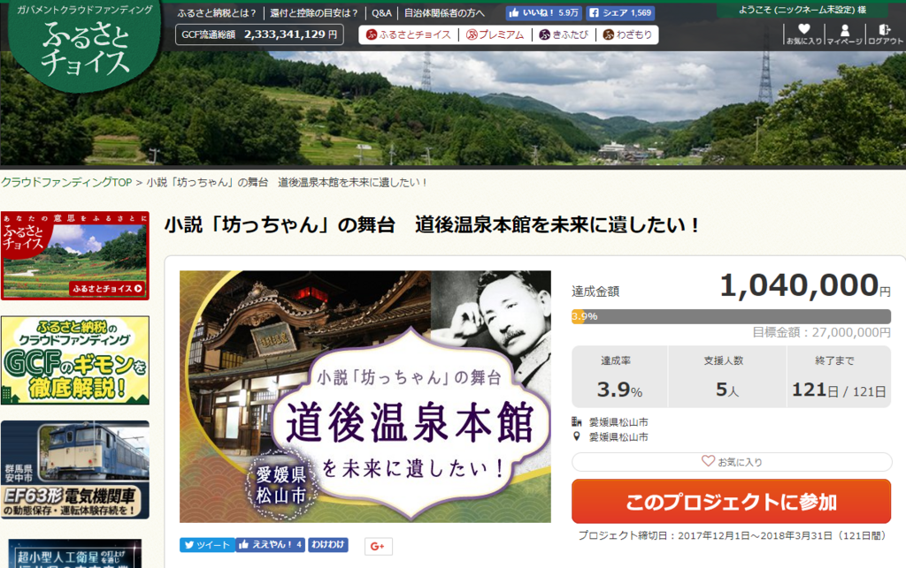

道後温泉本館の改修工事 ～ クラウドファンディングが始まりました
執筆日時：

やるやるといっておきながら、いつまで経っても始まらない（というイメージしかない）道後温泉本館の改修工事ですが、とうとう始まるようで。昨日からクラウドファンディングが始まりました。クラウドファンディングというのは、要するにネット募金です（ぇ
僕も一口ですがのっておきました。
個人的には「ふるさと納税」という制度には反対なのですが、県外からの寄付だとなかなかお得みたい。応援したいっていう方がいればぜひ寄付してあげてください。
中でも注目の特典は、この木札のフリーパス。道後温泉に入り放題になるらしいぞ！（5万円以上の寄付で1年、最大10年）

うぅぅ……松山市外在住者じゃないともらえないのか……ほしいぞ。ちなみに、市内在住者はカネを突く権利を「抽選で」もらえるそうな（当たる気がしねえ！
ちなみに、僕が寄付した時は 5 人で 104 万円が集まっていました。4人が一万円ずつ寄付したとすると、残り1人は太っ腹にも100万円寄付したのか……しゅごい……僕も「これは！」と思ったところにこれぐらいツッコめる身分になりたいものです。